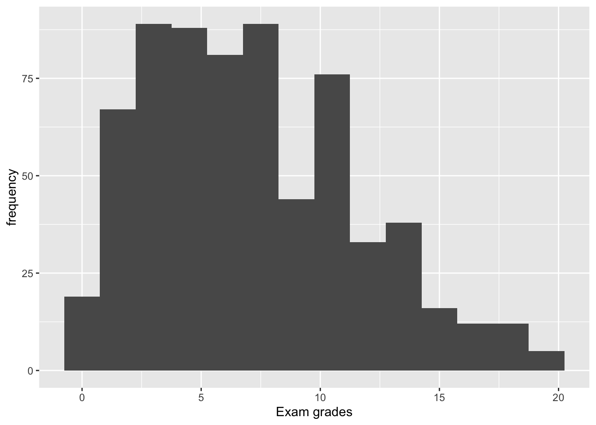
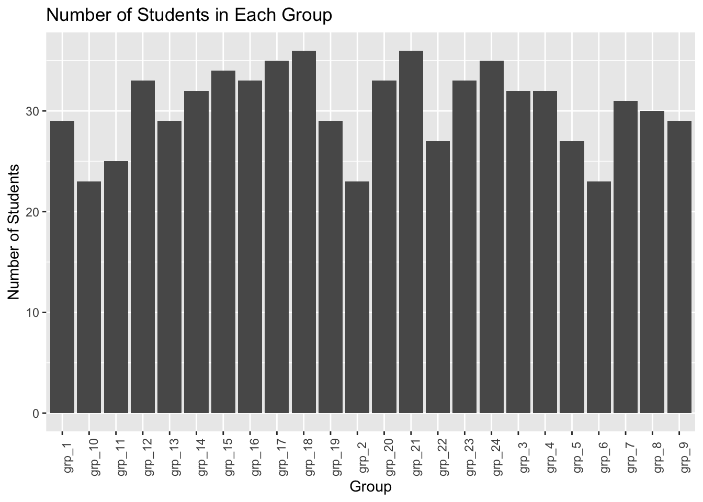
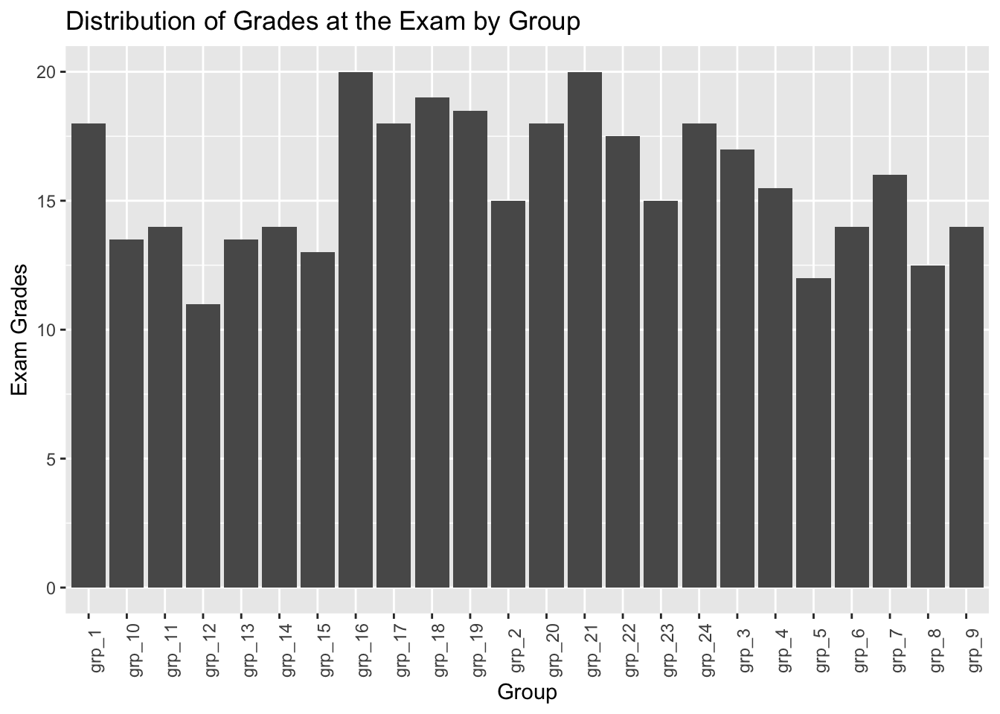
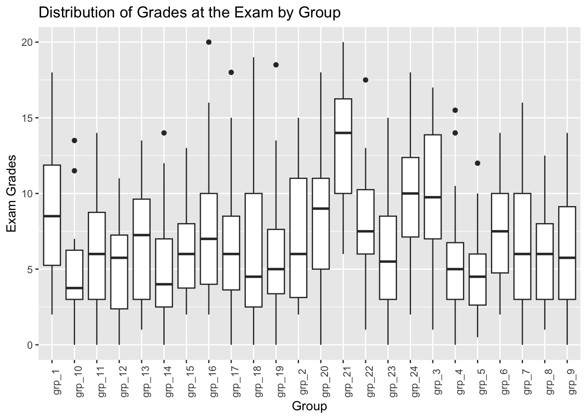
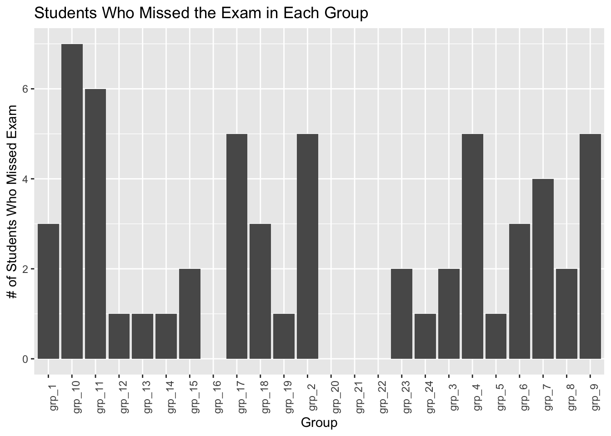
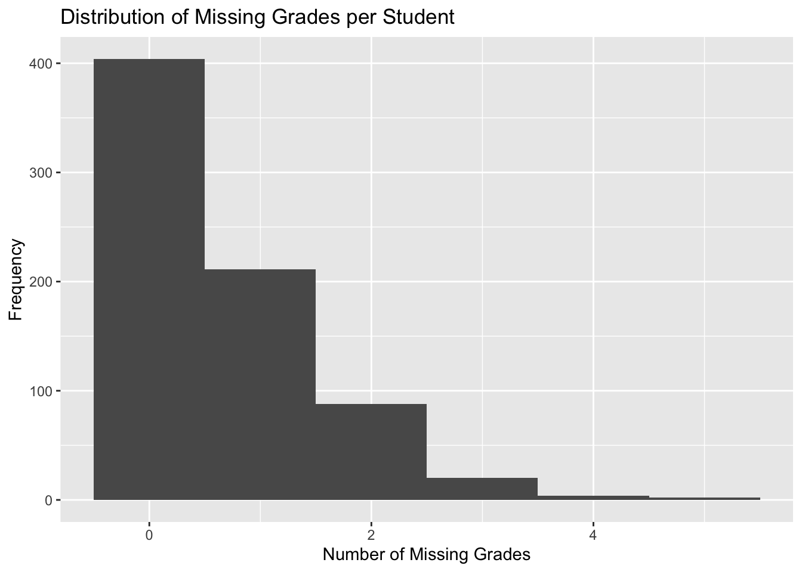
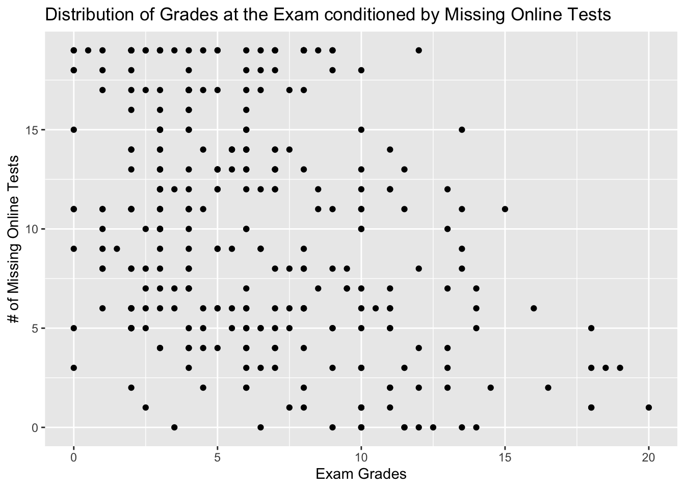

grades <- vroom(here("grades.csv"))grade_analysis
Grade analisys LAB
Question 1
Question 2
| min(Exam, na.rm = TRUE) | max(Exam, na.rm = TRUE) | median(Exam, na.rm = TRUE) | mean(Exam, na.rm = TRUE) | n() |
|---|---|---|---|---|
| 0 | 20 | 6.5 | 7.148729 | 729 |
Question 3
There is a total of 60 students who passed the test
Question 4

Question 5
| Group | N |
|---|---|
| grp_1 | 29 |
| grp_10 | 23 |
| grp_11 | 25 |
| grp_12 | 33 |
| grp_13 | 29 |
| grp_14 | 32 |
| grp_15 | 34 |
| grp_16 | 33 |
| grp_17 | 35 |
| grp_18 | 36 |
| grp_19 | 29 |
| grp_2 | 23 |
| grp_20 | 33 |
| grp_21 | 36 |
| grp_22 | 27 |
| grp_23 | 33 |
| grp_24 | 35 |
| grp_3 | 32 |
| grp_4 | 32 |
| grp_5 | 27 |
| grp_6 | 23 |
| grp_7 | 31 |
| grp_8 | 30 |
| grp_9 | 29 |
Question 6

Question 7

In the following representation we use the function geom_boxplot, that way we can see the median, quartiles and possible outliers

Question 8
| Group | Missed_Exam |
|---|---|
| grp_1 | 3 |
| grp_10 | 7 |
| grp_11 | 6 |
| grp_12 | 1 |
| grp_13 | 1 |
| grp_14 | 1 |
| grp_15 | 2 |
| grp_16 | 0 |
| grp_17 | 5 |
| grp_18 | 3 |
| grp_19 | 1 |
| grp_2 | 5 |
| grp_20 | 0 |
| grp_21 | 0 |
| grp_22 | 0 |
| grp_23 | 2 |
| grp_24 | 1 |
| grp_3 | 2 |
| grp_4 | 5 |
| grp_5 | 1 |
| grp_6 | 3 |
| grp_7 | 4 |
| grp_8 | 2 |
| grp_9 | 5 |
Question 9

Question 10
grades_long <- grades |>
pivot_longer(cols = starts_with(("MCQ_")),
names_to = "name",
values_to = "value") |>
select(Id, Group, name, value)Question 11
missing_grades <- grades_long |>
group_by(Id) |>
summarise(Missing_by_stud = sum(is.na(value)))Question 12

Question 13
| Group | Students_Missed_Exam |
|---|---|
| grp_1 | 25 |
| grp_10 | 16 |
| grp_11 | 8 |
| grp_12 | 54 |
| grp_13 | 4 |
| grp_14 | 19 |
| grp_15 | 20 |
| grp_16 | 10 |
| grp_17 | 12 |
| grp_18 | 46 |
| grp_19 | 34 |
Question 14
For this question I created a new data.frame as in question 10, but with online exams, then I computed the number of missing grades for the online tests for each student
online_grades_long <- grades |>
pivot_longer(cols = starts_with(("Online_MCQ_")),
names_to = "name",
values_to = "value") |>
select(Id, Group, name, value)
missing_online_tests <- online_grades_long |>
filter(str_starts(Group, "grp_1")) |>
group_by(Id) |>
summarise(Missing_Online_by_stud=sum(is.na(value)))Question 15

Question 16
missed_table <- grades |>
rowwise() |>
mutate(Missed = any(is.na(c_across(starts_with("MCQ_"))))) |>
select(Id, Missed) |>
distinct()Question 17
| Group | P_missed |
|---|---|
| grp_1 | 44.82759 |
| grp_10 | 43.47826 |
| grp_11 | 24.00000 |
| grp_12 | 100.00000 |
| grp_13 | 10.34483 |
| grp_14 | 40.62500 |
| grp_15 | 44.11765 |
| grp_16 | 21.21212 |
| grp_17 | 25.71429 |
| grp_18 | 97.22222 |
| grp_19 | 96.55172 |
| grp_2 | 26.08696 |
| grp_20 | 33.33333 |
| grp_21 | 27.77778 |
| grp_22 | 74.07407 |
| grp_23 | 18.18182 |
| grp_24 | 28.57143 |
| grp_3 | 28.12500 |
| grp_4 | 25.00000 |
| grp_5 | 100.00000 |
| grp_6 | 30.43478 |
| grp_7 | 32.25806 |
| grp_8 | 36.66667 |
| grp_9 | 62.06897 |
Question 18